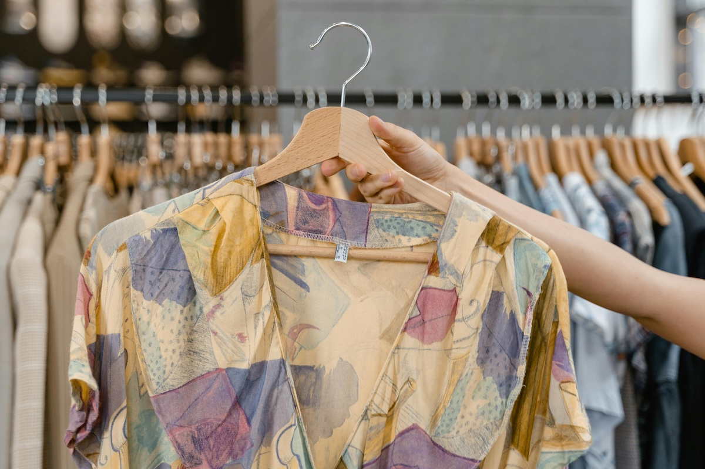

Clothes ready for a Second Wear
We believe great fashion deserves a second story.
Our shop is filled with carefully selected second hand pieces — from everyday essentials to one-of-a-kind finds. All our clothes are chosen for their quality, character, and charm.
Whether you're hunting for vintage gems, timeless classics, or something a little different, you'll find clothes that let you express your style sustainably and affordably. By shopping second hand, you're not just refreshing your wardrobe — you're giving beautiful clothes a new life and helping the planet at the same time.
Come and visit our shop. Have a browse, enjoy the hunt, and discover something you'll love again.
Sustainability
Discover how choosing second hand helps reduce waste, save resources, and give great clothes a longer life.
Find out moreVisit our shop

Find out where we're located, our opening hours, and plan your visit to explore our latest pre-loved finds in person.
Find out moreGet in contact
Have a question or something to donate? Get in touch with us — we'd love to hear from you.
Find out more